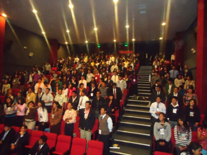
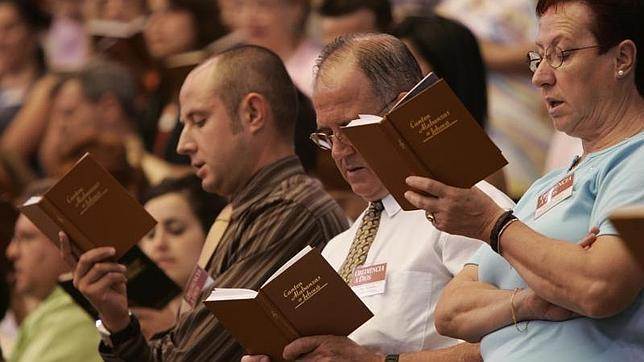
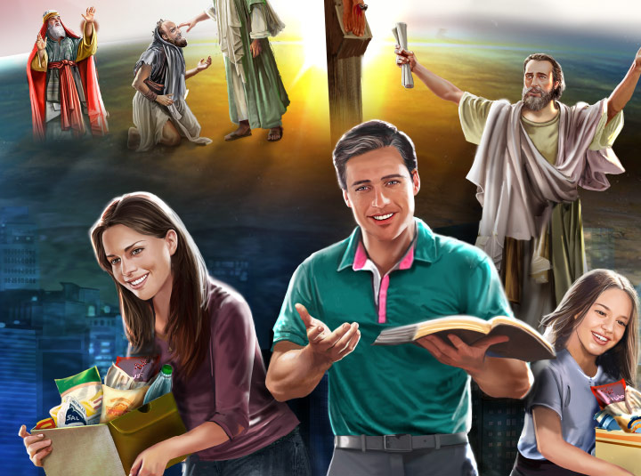
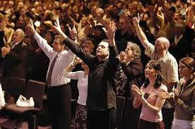

Para los miembros de la iglesia cristiana evangélica, la Semana Santa es el tiempo para recordar la muerte de Cristo. Para conmemorarla, se congregan en una jornada de oración y adoración, la cual inicia el Jueves Santo a las 9:00 de la noche y se extiende por 24 horas.
En esta reunión se dan cita grupos artísticos y musicales, ya que los cristianos creen que “Dios habita en medio de la alabanza”. Además, para ellos es fundamental la vigilia, es decir, pasar una noche en vela y adorando a Dios.
Con panderos, música y cantos, recuerdan la muerte de Jesucristo. La jornada de adoración comienza el jueves en la noche y termina el viernes. En estas 24 horas, la comunidad cristiana ora por los enfermos y por las necesidades de cada una de las personas que habitan en este mundo.
Frente a la resurrección de Jesucristo, los cristianos manifiestan que este hecho aún no ha sido confirmado; sin embargo, el domingo, día en que los católicos celebran la resurrección, ellos llevan a cabo una reunión de exaltación.
En cuanto a la comida y la vestimenta, esta comunidad no tiene restricción a la hora de ingerir carnes rojas, ni de lucir determinados atuendos.
En lo que respecta a la Semana Santa, indica que conmemoran la muerte del Señor Jesucristo a través de la reflexión individual, para tal fin los días jueves, viernes y domingo tienen encuentros personales.

Los Testigos de Jehová consideran que la Semana Mayor es una fecha común; ellos celebran anualmente la muerte de Jesús, pero lo hacen según el calendario arameo. En dicha reunión comparten vino y pan, tal como lo hizo el Señor en la última cena.
“Nosotros celebramos la muerte de Jesús con una cena, cada año la fecha puede variar dependiendo del calendario arameo.
“Durante la Semana Santa que llaman los católicos, los Testigos de Jehová comemos normalmente, ya que consideramos que esos son días común y corriente. A parte de ellos no creemos en santos ni imágenes”, comentó una feligrés Testigo de Jehová.

En el sentir de los adventistas, la Semana Santa es la conmemoración de la pasión de Cristo; sin embargo, los seis días los trabajan normalmente, además, no tienen prohibición para ingerir alimentos, aunque tienden a ser vegetarianos.
“Nosotros nos ceñimos a la Biblia y en ella no dice en ninguna parte que debemos descansar; lo que se señala allí es que hay que descansar antes de la preparación, es decir, el viernes. El sábado es el día de nuestro culto. Y el domingo también oramos.
“Un acto que reviste de mucha importancia es el lavatorio de pies, pero esto lo hacemos cada tres meses; adicionalmente, hacemos una cena con pan y con vino”, dijo Pedro Obando, adventista desde hace 40 años.
Para los adventistas, “las estaciones del vía crucis son 14 crucecitas de madera, pegadas a las paredes de una iglesia. Los 14 cuadros representan varias escenas de la vida de Cristo camino al calvario que no son estrictamente necesarias.

La celebración de la Semana Santa para los pentecostales inicia el jueves a las dos de la tarde con un desfile, en el cual reparten volantes, entonan canciones e invitan a toda la comunidad a congregarse en una reunión que tiene lugar en su centro de culto a las seis de la tarde.
Una vez allí en el templo, dan apertura a la fiesta denominada ‘Levántate, hoy es el día de tu salvación’. En este acto se efectúan bautizos, y llevan a cabo cuatro cultos o reuniones especiales.
Desde el día jueves se reúnen a alabar a Dios, para ello cuentan con la presencia de grupos musicales, duetos, mariachis y vallenatos, entre otros, porque, en realidad, viven una fiesta.
El viernes tienen la gran confraternidad, en donde a las 6:00 de la mañana y a las 2:00 y 5:30 de la tarde adoran a Jesús, para reconocerle su grandeza y su poder. Aparte de eso piden por la salud de los enfermos y porque se mejore la situación del mundo